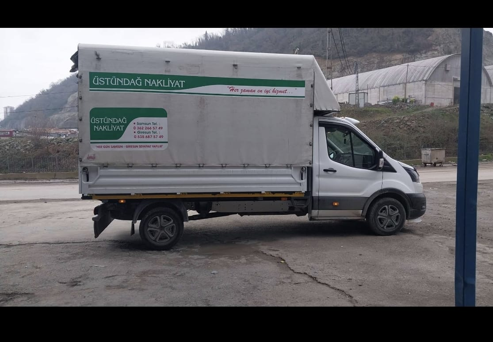

Hakkında
Samsun ve Giresun'dan tüm Türkiye'ye uzanan güvenilir taşıma ağı
Bu site, Üstündağ Nakliyat'ın iletişim bilgilerini, hizmet kapsamını ve kurumsal tanıtımını ziyaretçilere açık, anlaşılır ve güven veren bir yapıda sunmak için hazırlandı.
Firma, Samsun ve Giresun merkezli çalışsa da hizmet alanını bu iki şehirle sınırlamaz; Türkiye'nin pek çok noktasına planlı, düzenli ve özenli taşımacılık desteği sağlar.
Hizmet Bilgisi
İhtiyaca uygun, geniş kapsamlı nakliyat desteği
- Samsun ve Giresun merkezli şehir içi ve şehirler arası nakliyat çözümleri
- Tüm Türkiye'ye ulaşan planlı ambar ve sevkiyat organizasyonu
- Telefonla hızlı bilgilendirme ve doğrudan iletişim desteği
Çalışma Hattı
Merkez noktaları Samsun ve Giresun, hizmet alanı ise tüm Türkiye
Samsun
Giresun
Sayfa ziyaretçileri, firmanın ana bağlantı noktalarının Samsun ve Giresun olduğunu, bununla birlikte Türkiye'nin farklı şehirlerine de sevkiyat hizmeti verildiğini tek bakışta görebilir.
Galeri
Firma aracı ve iş yerinden görüntüler
Sayfada kullanılan görseller doğrudan firma fotoğraflarından alınmıştır. Böylece ziyaretçiler hem aracı hem de iş yeri görünümünü görebilir.

İletişim
Telefon ve adres bilgileri
Samsun ve Giresun iletişim noktaları üzerinden teklif alabilir, Türkiye'nin hangi bölgesine gönderim planladığınızı hızlıca ileterek detaylı bilgi edinebilirsiniz.
Samsun Tel.
0 362 266 57 49
Şabanoğlu Mh. 19 Mayıs San. Sit. 69. Sk. No:54, Tekkeköy
Giresun Tel.
0 535 687 57 49
Gedikkaya Mh. Aliusta Cd. No:80/18, Giresun